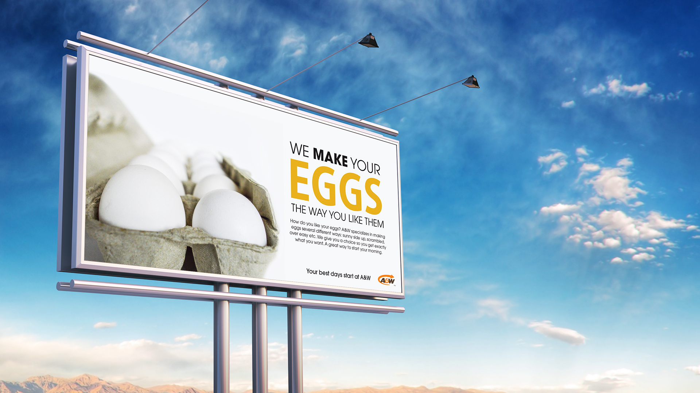

A&W Ad. Campaign

Concept: During my research, I discovered a unique trait about A&W's eggs. The make your eggs the way you like them. This is where my concept originated from.
Sketching: My sketches ranged from concept layout designs, to photography shot sketches.
Photography: To get the perfect photography shots I used natural lighting to really capture the shine of the egg yolk and whites. I picked angles that would offer interesting views to intrigue the audience. My goal was to have a cohesive set of clean images that would compliment the typography placement.
Sketches
Photography